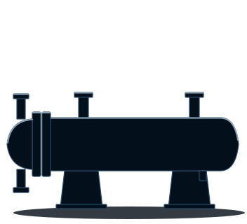
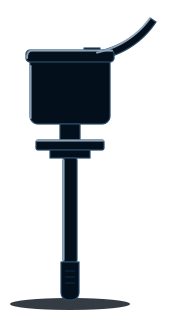

MSP 1500-E
Autoclave ETO
Câmara de 1500 L em aço inox 316L, com dupla porta guilhotina vertical.
Ver o modeloAutoclave, câmara de grande porte, gerador de vapor, aquecedor de gás e psicrômetro: os equipamentos de um ciclo ETO, projetados e automatizados pela AFR e qualificados pela LabQuali.
Conhecer a linha
Cinco equipamentos, um ciclo de esterilização. Cada um ganha página própria quando o modelo fica pronto.
MSP 1500-E
Câmara de 1500 L em aço inox 316L, com dupla porta guilhotina vertical.
Ver o modelo
MSP 22K-E
Câmara de 22.000 L para carga em palete, com dupla porta guilhotina lateral.

MSP GV-40
Produz o vapor que umidifica e condiciona a carga antes da entrada do gás.

Em breve
Vaporiza e aquece o óxido de etileno líquido antes de ele entrar na câmara.

Em breve
Mede a umidade relativa durante o ciclo e entrega o valor em sinal de 4–20 mA.
Quando o equipamento de linha não atende, a AFR e a LabQuali projetam a máquina para o processo do cliente: câmaras em volumes fora do padrão, da autoclave de 1500 L à câmara de 22.000 L, automação dedicada e adaptação de equipamentos que já estão em operação.
O trabalho começa por um levantamento técnico do processo, da carga e do local de instalação. A proposta sai depois dele, e o projeto segue o mesmo caminho dos equipamentos da linha: engenharia, automação, instalação e qualificação.
Falar sobre um projeto especialA AFR e a LabQuali projetam, desenvolvem, automatizam, qualificam e validam os equipamentos MARSP.
As duas empresas atuam juntas do projeto ao start-up. O cliente recebe equipamento, automação e documentação de qualificação em um pacote completo.
Atendimento técnico para autoclaves de óxido de etileno de qualquer marca, do diagnóstico ao suporte remoto.
Escreva para a LabQuali dizendo qual equipamento interessa e onde ele vai operar.